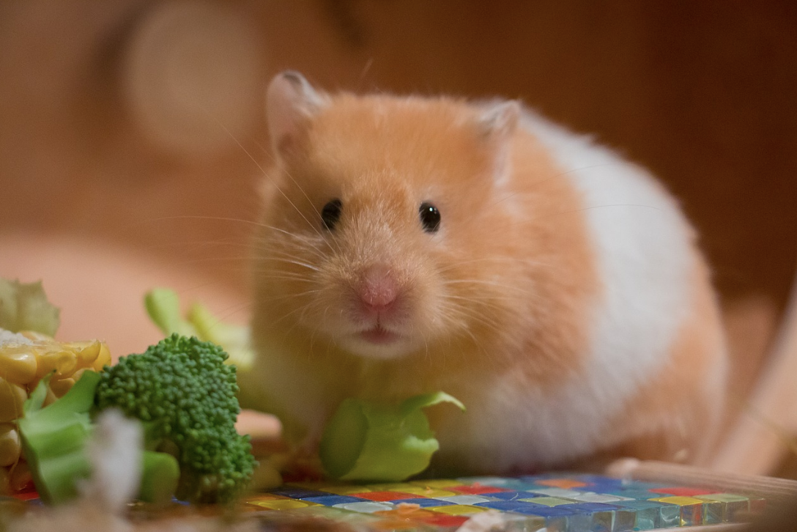

So you’re thinking about getting a hamster?
Maybe you are a kid asking for your first pet. Maybe you are a parent, doing research to see if a hamster would be appropriate for your child. Maybe you are even an adult, trying to assess for yourself if a hamster is right for your lifestyle. Hamsters can be wonderful pets for people of all ages. They are popular with children, as many have a hamster as one of their first pets. However, they can also be a fine pet for adults. With their cute little faces and energetic personalities, they can be highly entertaining to those who decide to keep them as pets. Hamsters love to run, forage for food, and sometimes even climb, though they are not the best climbers! I personally got my first hamster as an adult after taking months to thoroughly research proper hamster care, and I am glad that I did.
Hamsters are notoriously neglected animals. Though not intentional, many hamster owners abuse their hamsters, or at the very least, do not provide to them their bare minimum standards for living. In the wild, hamsters can travel up to 8 miles a night foraging for food, and yet, many hamster enclosures available in the US market are 250 sq inches or under. Because hamsters are normally marketed towards children, many hamster accessories are branded as children’s toys, rather than being thought of as how to properly care for the hamster. Even though they are small creatures, they still deserve to have a fulfilling life, and as pet owners it is our responsibility to provide that life to them. Please use this website to learn more about hamsters and how to properly care for them. I hope this helps you in your research as you learn how to care for your new furry friend!
